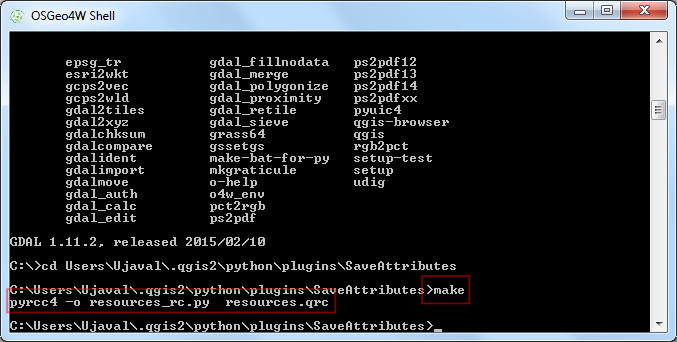
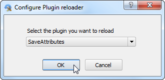

Viivojen pituuksien laskenta ja tilastot
[ Download PDF A4 Letter ]
QGIS sisäiset kunktiot laskevat erilaisia määreitä perustuen ominaisuuksien geometrioihin - kuten pituus, ala, ympärysmitta jne. Tämä opas näyttää kuinka käyttää Tiedon laskinta sarakkeen lisäämistä joka osoittaa jokaisen ominaisuuden pituutta.
Katsaus tehtävään
Käytämme pohjois Amerikan rautateiden moniviiva shapefilea ja yritämme päätellä Yhdysvaltain rautateiden kokonaispituuden.
Muita taitoja joita tulet oppimaan
Lausekkeiden käyttäminen ominaisuuksien valinnassa.
Tason uudelleen projisointi maantieteellisesta projjisoituun koordinaattijärjestelmään (CRS).
Tason attribuuttien arvojen näyttäminen.
Menettely
Mene .

Selaile ne_10m_railroads_north_america.zip tiedostoon ja klikkaa OK.

Lisää vektoritaso ikkunassa, valitse ne_10m_railroads_north_america.shp taso.

Kun taso on ladattu huomaat että tasolla on viivoja jotka esittävät kaikkia pohjois Ameriikan rautateitä. Koska halusimme laskea vain Yhdysvaltojen lviivojen pituudet tarvitsee meidän valita ne viivat jotka sijaitsevat Yhdysvaltojen alueella. Klikkaa oikeall tasonnimea ja valitse Avaa attribuuttitaulu.

Tasolla on attribuutti sov_a3. Tämä on 3 kirjaiminen koodi maasta jonne kukin ominaisuus sijoittuu. Voimme käyttää tämän attribuutin arvoa valitessamme ominaisuudet jotka sijaitsevat USA:ssa.

Attribuuyyitaulu ikkunassa klikkaa Valitse ominaisuudet käyttämällä lauseketta näppäimellä.

Uusi ikkuna Select By Expression avautuu. Etsi attribuutti sov_a3 valintalistasta Tiedot ja arvot joka sijaitsee Funktiolista kappaleessa. Kaksoisklikkaa sitä lisätäksesi sen Lauseke tekstialueelle. Taydenna lauseke kirjoittamalla "sov_a3" = 'USA'. Klikkaa Valitse ja sen jälkeen Sulje.

Takaisin QGIS pääikkunaan, jossa voit nähdä kaikki viivat jotka sijaitsevat USA:n alueella. Ne valittuina ja keltaisia.

Nyt tallennamme valintamme uuteen shapefile tiedostoon. Klikkaa oikealla ne_10m_railroads_north_america tasoa ja valitse Tallenna valinta nimellä....
Uudemmissa versioissa valitse Tallenna nimellä... ja merkkaus Tallenna ainoastaan valitut ominaisuudet laatikkoon.
Huom: kääntäjän lisäys

Klikkaa Selaile ja anna nimi tulostiedostolle kuten usa_railroads.shp. Haluamme myös muuttaa tason koordinaattijärjestelmää (CRS). Klikkaa Selaile CRS vieressä.
Muista
Sisäiset funktiot jotka käyttävät ominaisuuksien geometrioita laskentaan käyttävät tason koordinaattijärjestelmän (CRS) yksiköitä. Maantieteelliset koordinaattijärjestelmissä kuten EPSG:4326 ovat yksiköt asteita - joten ominaisuuden pituus olisi asteita ja ala neliöasteita - joka olisi mieletöntä. Sinun tulee siis käyttää projisoitua koordinaattijärjestelmää jossa yksiköt ovat joko metrejä tai jalkoja laskutoimitusten suorittamiseksi.

Koska olimme kiinnostuneita laskemaan pituuden valitsemme tasavälisen (equidistant) projektion. Kirjoita north america equ Suodatin hakulaatikkoon. Tulospanelista alhaalta valitse North_America_Equidistant_Conic EPSG:102010 koordinaattijärjestelmäksi (CRS). Klikkaa OK.

Tallenna vektoritaso nimellä... ikkunassa merkkaa Lisää talletettu tiedosto kartalle ja klikkaa OK.

Kun tallennus prosessi päättyy näet uuden tason usa_railroads ladatun QGIS karttapohjalle. Voi poistaa merkkauksen tason ``ne_10m_railroads_north_america` etulaatikosta poistaaksesi sen näytön koska emme tarvitse sitä enää.

Klikkaa oikealla ``usa_railroads` tasoa ja valitse Avaa attribuuttitaulu.

Nyt on aika lisätä sarake jokaisen ominaisuuden pituudelle. Aseta taso muokkaustilaan klikkamalla Vaihda muokkauksen toimintatilaa näppäintä. Kun muokkaus mahdollista, klikkaa Avaa tiedon laskin näppäintä.

Ikkunassa Tietolaskin, merkkaa Luo uusi tieto. Anna length_km Tulostustiedon nimi tietokenttään. Valitse Desimaalinumero (reaali) Tulostustiedon tyyppi kenttään. Vaihda tuloksen Tarkkuus to 2. Funktiolista paneelista etsi $length Geometria ryhmästä. Tuplaklikkaa sitä lisätäksesi sen Lauseke laatikkoon. Täydennä lauseke $length / 1000 kokska tasomme koordinaattijärjestelmä (CRS) on metrit yksiköissä ja haluamme tuloksen olevan km yksiköissä. Klikkaa OK.

Takaisin Attribuuttitaulussa, näet uuden sarakkeen length_km ilmestyneen. Klikkaa Vaihda muokkauksen toimintatilaa näppäintä tallettaaksesi muutokset attribuuttitaulussa.

Nyt kun meillä on jokaisen viivan yksilöllinen pituus, voimme helposti summata kaiken ja löytää Kokonais pituuden. Mene .

Valitse Valitse vektoritaso tietoon usa_railroads. Valitse Kohde kenttä tiedosta length_km ja klikkaa OK. Näet erilaisia tilastotietoja ilmestyvän. Summa arvo on rautateiden kokonaispituus jota etsimme.
Muista
Tämä vastaus saattaa hieman vaihdella jos eri projektio olisi valittu. Käytännössä tieviivojen pituudet ja muut lineaariset ominaisuudet on mitattu maanpinnalla, kenttätyönä, ja annetaan attribuutteina tietojoukkoon. Tämä menetelmä on toimiva jos tuollainen attribuuttitieto puuttuu ja on likiarvo todellisille viivojen pituuksille.